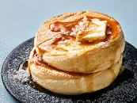

Japanese Fluffy Pancakes Recipe

Description
Japanese pancakes date back to the 16th century
when they were used as a part of a tea ceremony. The savory delicacies
were made with flour, water, and sake and char-grilled. Sweet miso was
then spread on the relatively thin creation and then rolled up to be eaten in a
bite-sized portion.
Ingredients
- 2 Eggs, Separated
- 1 ½ Cups All-Purpose Flour
- ¼ Cup White Sugar
- 2 Teaspoons Baking Powder
- ½ Teaspoon Baking Soda
- 1 ¼ Cups Buttermilk
- ¼ Cup Melted Butter
- ½ Teaspoon Vanilla Extract
Steps
- Beat egg whites in a glass, metal, or ceramic bowl until stiff peaks form
- Butter enough 3 1/4-inch ring molds to fill your frying pan. Place molds in
the pan over low heat, cover
- Mix flour, sugar, baking powder, and baking soda in a bowl
- Combine buttermilk, egg yolks, butter, and vanilla extract in a separate bowl,
add the flour mixture and stir until batter is fairly smooth
- Fold egg whites into the batter until combined, small bits of egg whites still
showing is ok
- Pour about 1/2 cup of batter into each mold and cover the pan. Cook until bubbles
start forming at the top, about 5 minutes. Flip pancakes in their molds and cook
until set, 3 to 4 minutes more
Links